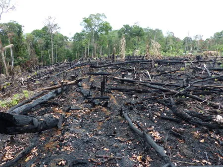
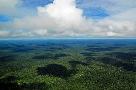

Vida Terrestre

A humanidade e a proteção do meio ambiente.O foco desta ação é oferecer à sociedade uma oportunidade de
se aprofundar, a cada mês, no conhecimento
sobre os objetivos e suas metas, assumidos pelos Estados-membros da ONU como parte da Agenda para o
Desenvolvimento Sustentável.
ss

Pequenos problemas da vida terreste:Problemas como poluição atmosférica, poluição das águas,
queimadas e desmatamentos são cada vez mais frequentes e afetam a qualidade de vida do homem e
também de outras espécies.

Objetivo 15.
Proteger, Recuperar E Promover O Uso Sustentável Dos Ecossistemas Terrestres, Gerir De
Forma
Sustentável As Florestas, Combater A Desertificação, Deter E Reverter A Degradação Da Terra E
Deter A Perda De
Biodiversidade
15.1 Até 2020, assegurar a conservação, recuperação e uso sustentável de ecossistemas
terrestres e de água
doce interiores e seus serviços, em especial florestas, zonas úmidas, montanhas e terras
áridas, em
conformidade com as obrigações decorrentes dos acordos internacionais
15.2 Até 2020, promover a implementação da gestão sustentável de todos os tipos de florestas,
deter o
desmatamento, restaurar florestas degradadas e aumentar substancialmente o florestamento e o
reflorestamento
globalmente
15.3 Até 2030, combater a desertificação, restaurar a terra e o solo degradado, incluindo
terrenos afetados
pela desertificação, secas e inundações, e lutar para alcançar um mundo neutro em termos de
degradação do solo
15.4 Até 2030, assegurar a conservação dos ecossistemas de montanha, incluindo a sua
biodiversidade, para
melhorar a sua capacidade de proporcionar benefícios que são essenciais para o desenvolvimento
sustentável
15.5 Tomar medidas urgentes e significativas para reduzir a degradação de habitat naturais,
deter a perda de
biodiversidade e, até 2020, proteger e evitar a extinção de espécies ameaçadas
15.6 Garantir uma repartição justa e equitativa dos benefícios derivados da utilização dos
recursos genéticos
e promover o acesso adequado aos recursos genéticos
15.7 Tomar medidas urgentes para acabar com a caça ilegal e o tráfico de espécies da flora e
fauna protegidas
e abordar tanto a demanda quanto a oferta de produtos ilegais da vida selvagem
15.8 Até 2020, implementar medidas para evitar a introdução e reduzir significativamente o
impacto de espécies
exóticas invasoras em ecossistemas terrestres e aquáticos, e controlar ou erradicar as espécies
prioritárias
15.9 Até 2020, integrar os valores dos ecossistemas e da biodiversidade ao planejamento
nacional e local, nos
processos de desenvolvimento, nas estratégias de redução da pobreza e nos sistemas de contas
15.a Mobilizar e aumentar significativamente, a partir de todas as fontes, os recursos
financeiros para a
conservação e o uso sustentável da biodiversidade e dos ecossistemas
15.b Mobilizar recursos significativos de todas as fontes e em todos os níveis para financiar o
manejo
florestal sustentável e proporcionar incentivos adequados aos países em desenvolvimento para
promover o manejo
florestal sustentável, inclusive para a conservação e o reflorestamento
15.c Reforçar o apoio global para os esforços de combate à caça ilegal e ao tráfico de espécies
protegidas,
inclusive por meio do aumento da capacidade das comunidades locais para buscar oportunidades de
subsistência
sustentável.

Proteger, recuperar e promover o uso sustentável dos ecossistemas terrestres, gerir de
forma sustentável as florestas, combater a desertificação, deter e reverter a degradação da
terra e deter a perda. O mote que movimenta o objetivo que trabalharemos hoje, nos inspira a
pensar e agir para a mudança do atual cenário de deterioração do meio ambiente.
Orientações
É certo afirmar que hábitos diários como a economia de água e energia,
reciclagem e redução de lixo, descarte responsável e o ajuste da alimentação para consumo
de produtos orgânicos e de agricultura familiar podem ajudar na pauta ligada à Vida
Terrestre.Isso é bom para o meio ambiente, não só para ajudar nós seres humanos e sim os
animais e as plantas.Este site é bom para apresentar a natureza e o cuidado do nosso
planeta para nós ficar mais orientados sobre o assunto.temos algumas imagens
falando sobre,a primeira imagen mostra como é bonito o nosso planeta terra sendo
cuidada, segunda imagen e explicando sobre atmosfera e falando sobre a poluição das água e
queimaduras nas nossas árvores.E as proximas imagens e para entender mais um poucos.